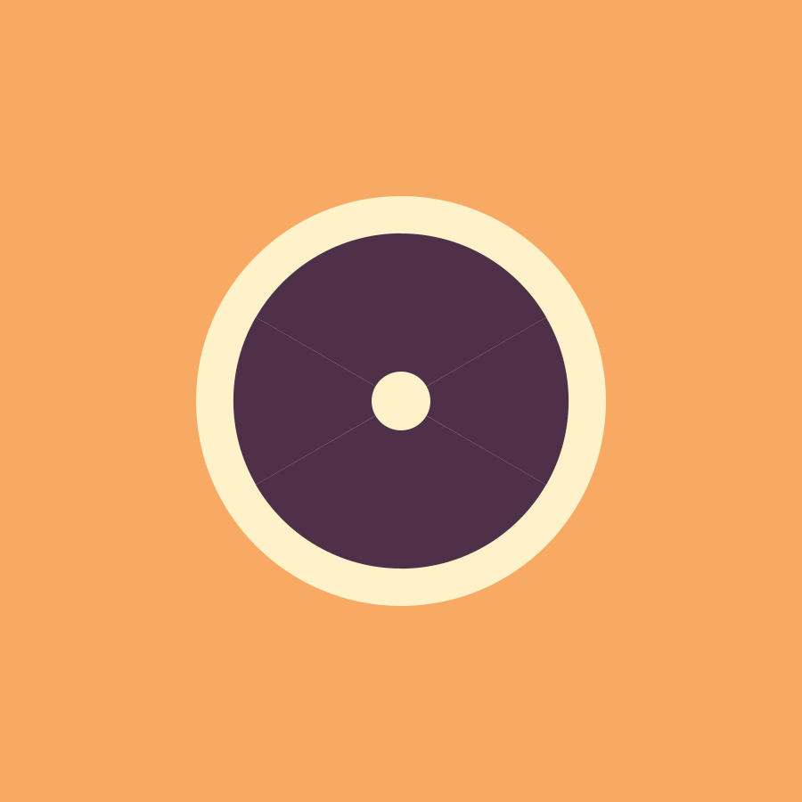
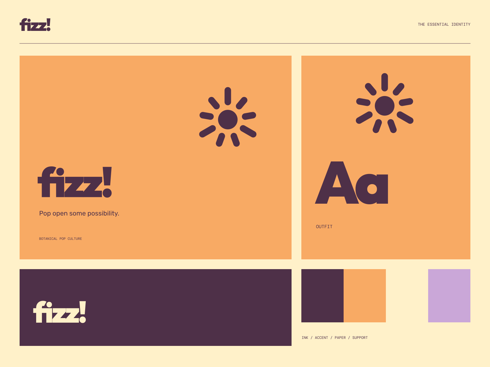

01
A bright first sip
Botanical combinations with a character of their own.
BOTANICAL SODA / GOOD SPIRITS
Pop open some possibility. Real flavor. Good spirits.

A coherent little world
Real flavor. Good spirits. Pop open some possibility.
01
Botanical combinations with a character of their own.
02
Useful, plainly stated ingredients without the mystery.
03
A small, sunny pleasure for the way your day goes.

The point of view
Playful exploded bubbles, juicy gradient fruit forms, loud can labels, and exuberant rounded lettering. Flavor becomes a bold, clear graphic system.